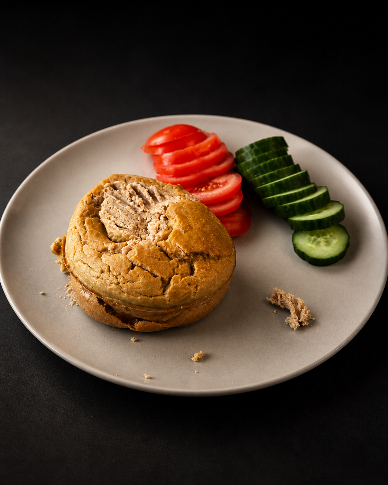

Le pain au thon

Ingrédients
- 180 g de thon
- 2 œufs
- 200 g de concombre
- 1 tomate
Préparation
- Mixer 180 g de thon avec 2 œufs.
- Verser la préparation dans un plat allant au four.
- Cuire 20 à 25 minutes à 180°C.
- Pendant ce temps, couper 200 g de concombre et 1 tomate.
- Au moment de manger, couper le “pain” au thon et mettre la tomate et le concombre dessus.
Valeurs nutritionnelles (approx.)
Par portion : 419 kcal • 65 g protéines • 14 g lipides • 7 g glucides • 4 g fibres